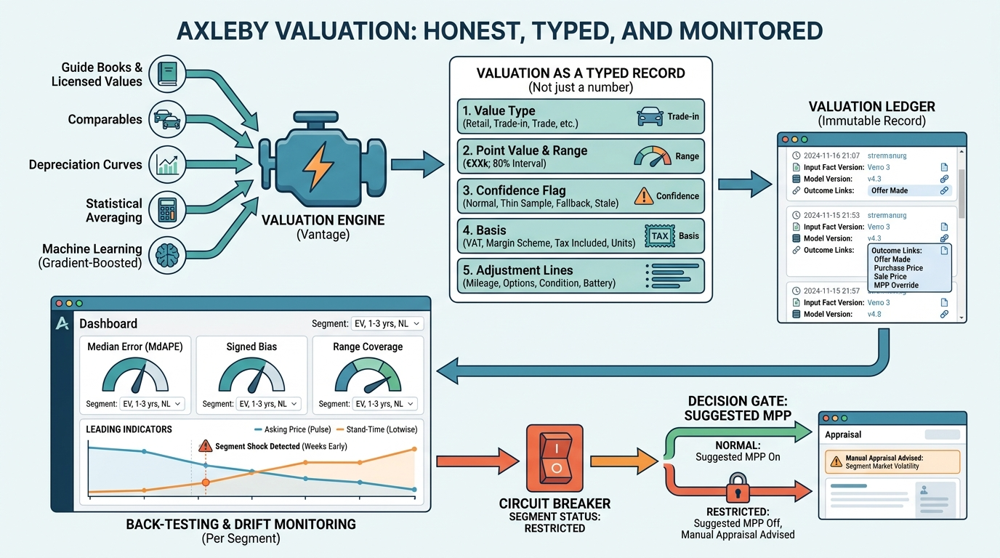

Part III — VALUE: Market Data, Valuation and Condition
What Is It Worth? Building and Governing a Valuation Engine

Image generated by Google Gemini (gemini-3-pro-image-preview)
Part III — VALUE: Market Data, Valuation and Condition

Image generated by Google Gemini (gemini-3-pro-image-preview)